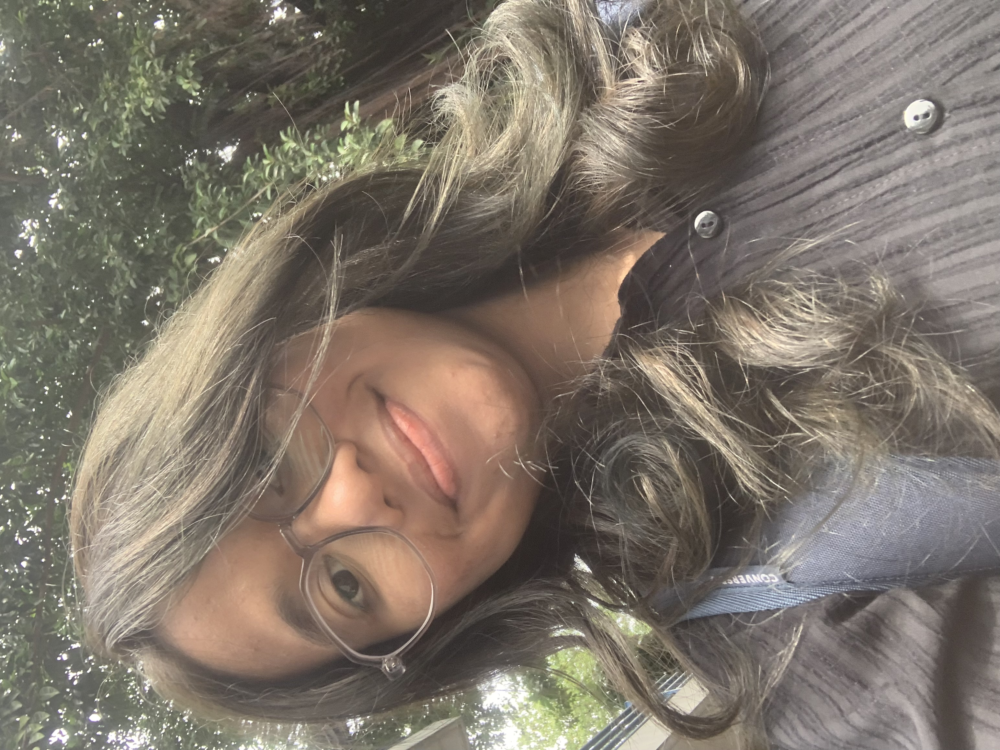

Mahasiswa Teknik Informatika dengan peminatan Artificial Intelligence dan Data Text yang memiliki latar belakang pendidikan SMK Akuntansi. Memiliki minat pada bidang AI, Data Science, Machine Learning, Analisis Data, dan Pengembangan Web untuk menciptakan solusi berbasis data yang bermanfaat.
Download CV
Mempelajari konsep AI dan penerapannya untuk membantu pengolahan data, prediksi, serta pengambilan keputusan secara lebih cerdas.
Berfokus pada pengolahan, analisis, dan visualisasi data untuk menghasilkan insight yang bermanfaat dan mudah dipahami.
Mengembangkan pemahaman tentang model machine learning untuk klasifikasi, prediksi, dan analisis pola dari data.
Membangun website yang responsif, modern, dan user-friendly sebagai sarana penyampaian informasi maupun pengembangan sistem.
2021 - 2024
Mempelajari Akuntansi Perusahaan Jasa, Akuntansi Perusahaan Dagang, Penyusunan Laporan Keuangan, Perpajakan Dasar, dan Komputer Akuntansi.
2024 - Sekarang
Peminatan Artificial Intelligence & Data Text dengan fokus pada Machine Learning, Data Mining, NLP, Basis Data, dan Pemrograman.
📧 adeliazahwabilqis24@gmail.com
🎓 Mahasiswa Teknik Informatika - AI & Data Text
📍 Indonesia